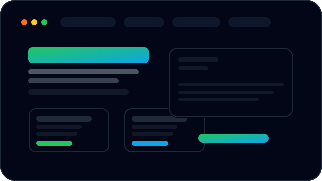

GIX Consult
Estratégia, estruturação e execução de projetos.
Acesse a plataforma de consultoria da GIX para estruturar negócios, projetos e veículos de investimento com governança, compliance e foco em resultados.

Prévia do site